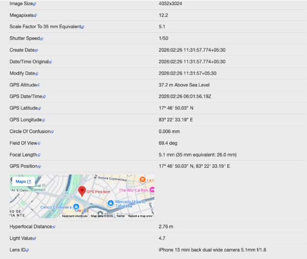
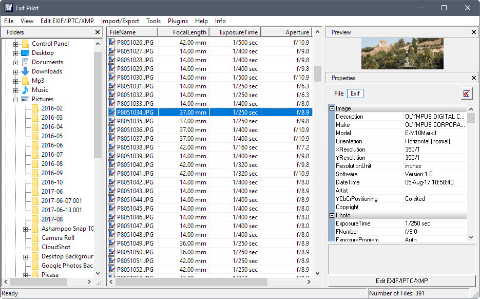

To extract and analyze EXIF metadata from digital image files using Exifreader software for forensic investigation purposes.
EXIF stands for Exchangeable Image File Format. It is a standard that specifies the formats for images and ancillary tags used by digital cameras and scanners. When a photo is taken with a digital camera or smartphone, the device automatically embeds metadata into the image file.
This metadata includes valuable information such as camera make and model, date and time the photo was taken, GPS coordinates (if location services were enabled), exposure settings, resolution, and sometimes even the software used to edit the image.
In digital forensics, EXIF data is extremely important because it can help investigators establish when and where a photo was taken, what device was used, and whether the image has been modified. This evidence can be crucial in criminal investigations.


The EXIF metadata was successfully extracted from the sample images using Exifreader software. The extracted data included camera make and model, date and time stamps, resolution details, and GPS coordinates. This demonstrates how digital images contain hidden metadata that can be valuable for forensic investigations.